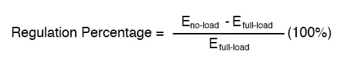
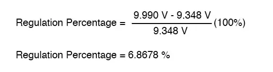
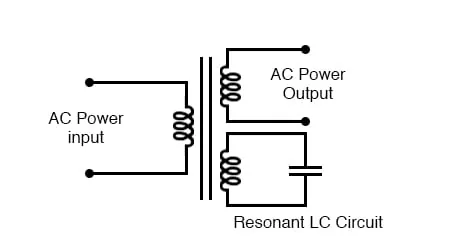

As we saw in a few SPICE analyses earlier in this chapter, the output voltage of a transformer varies some with varying load resistances, even with a constant voltage input.
The degree of variance is affected by the primary and secondary winding inductances, among other factors, not the least of which includes winding resistance and the degree of mutual inductance (magnetic coupling) between the primary and secondary windings.
For power transformer applications, where the transformer is seen by the load (ideally) as a constant source of voltage, it is good to have the secondary voltage vary as little as possible for wide variances in load current.
The measure of how well a power transformer maintains constant secondary voltage over a range of load currents is called the transformer’s voltage regulation. It can be calculated from the following formula:

“Full-load” means the point at which the transformer is operating at maximum permissible secondary current. This operating point will be determined primarily by the winding wire size (ampacity) and the method of transformer cooling.
Taking our first SPICE transformer simulation as an example, let’s compare the output voltage with a 1 kΩ load versus a 200 Ω load (assuming that the 200 Ω load will be our “full load” condition). Recall if you will that our constant primary voltage was 10.00 volts AC:
freq v(3,5) i(vi1) 6.000E+01 9.962E+00 9.962E-03 Output with 1k ohm load freq v(3,5) i(vi1) 6.000E+01 9.348E+00 4.674E-02 Output with 200 ohm load
Notice how the output voltage decreases as the load gets heavier (more current). Now let’s take that same transformer circuit and place a load resistance of extremely high magnitude across the secondary winding to simulate a “no-load” condition: (See “transformer” spice list”)
transformer v1 1 0 ac 10 sin rbogus1 1 2 1e-12 rbogus2 5 0 9e12 l1 2 0 100 l2 3 5 100 k l1 l2 0.999 vi1 3 4 ac 0 rload 4 5 9e12 .ac lin 1 60 60 .print ac v(2,0) i(v1) .print ac v(3,5) i(vi1) .end
freq v(2) i(v1) 6.000E+01 1.000E+01 2.653E-04 freq v(3,5) i(vi1) 6.000E+01 9.990E+00 1.110E-12 Output with (almost) no load
So, we see that our output (secondary) voltage spans a range of 9.990 volts at (virtually) no load and 9.348 volts at the point we decided to call “full load.” Calculating voltage regulation with these figures, we get:

Incidentally, this would be considered rather poor (or “loose”) regulation for a power transformer. Powering a simple resistive load like this, a good power transformer should exhibit a regulation percentage of less than 3%.
Inductive loads tend to create a condition of worse voltage regulation, so this analysis with purely resistive loads was a “best-case” condition.
There are some applications, however, where poor regulation is actually desired. One such case is in discharge lighting, where a step-up transformer is required to initially generate a high voltage (necessary to “ignite” the lamps), then the voltage is expected to drop off once the lamp begins to draw current.
This is because discharge lamps’ voltage requirements tend to be much lower after a current has been established through the arc path. In this case, a step-up transformer with poor voltage regulation suffices nicely for the task of conditioning power to the lamp.
Another application is in current control for AC arc welders, which are nothing more than step-down transformers supplying low-voltage, high-current power for the welding process.
A high voltage is desired to assist in “striking” the arc (getting it started), but like the discharge lamp, an arc doesn’t require as much voltage to sustain itself once the air has been heated to the point of ionization. Thus, a decrease of secondary voltage under high load current would be a good thing.
Some arc welder designs provide arc current adjustment by means of a movable iron core in the transformer, cranked in or out of the winding assembly by the operator.
Moving the iron slug away from the windings reduces the strength of magnetic coupling between the windings, which diminishes no-load secondary voltage and makes for poorer voltage regulation.
No exposition on transformer regulation could be called complete without mention of an unusual device called a ferroresonant transformer.
“Ferroresonance” is a phenomenon associated with the behavior of iron cores while operating near a point of magnetic saturation (where the core is so strongly magnetized that further increases in winding current results in little or no increase in magnetic flux).
While being somewhat difficult to describe without going deep into electromagnetic theory, the ferroresonant transformer is a power transformer engineered to operate in a condition of persistent core saturation.
That is, its iron core is “stuffed full” of magnetic lines of flux for a large portion of the AC cycle so that variations in supply voltage (primary winding current) have little effect on the core’s magnetic flux density, which means the secondary winding outputs a nearly constant voltage despite significant variations in supply (primary winding) voltage.
Normally, core saturation in a transformer results in distortion of the sine wave shape, and the ferroresonant transformer is no exception. To combat this side effect, ferroresonant transformers have an auxiliary secondary winding paralleled with one or more capacitors, forming a resonant circuit tuned to the power supply frequency.
This “tank circuit” serves as a filter to reject harmonics created by the core saturation, and provides the added benefit of storing energy in the form of AC oscillations, which is available for sustaining output winding voltage for brief periods of input voltage loss (milliseconds’ worth of time, but certainly better than nothing).

Ferroresonant transformer provides voltage regulation of the output.
In addition to blocking harmonics created by the saturated core, this resonant circuit also “filters out” harmonic frequencies generated by nonlinear (switching) loads in the secondary winding circuit and any harmonics present in the source voltage, providing “clean” power to the load.
Ferroresonant transformers offer several features useful in AC power conditioning: constant output voltage given substantial variations in input voltage, harmonic filtering between the power source and the load, and the ability to “ride through” brief losses in power by keeping a reserve of energy in its resonant tank circuit.
These transformers are also highly tolerant of excessive loading and transient (momentary) voltage surges. They are so tolerant, in fact, that some may be briefly paralleled with unsynchronized AC power sources, allowing a load to be switched from one source of power to another in a “make-before-break” fashion with no interruption of power on the secondary side!
Unfortunately, these devices have equally noteworthy disadvantages: they waste a lot of energy (due to hysteresis losses in the saturated core), generating significant heat in the process, and are intolerant of frequency variations, which means they don’t work very well when powered by small engine-driven generators having poor speed regulation.
Voltages produced in the resonant winding/capacitor circuit tend to be very high, necessitating expensive capacitors and presenting the service technician with very dangerous working voltages. Some applications, though, may prioritize the ferroresonant transformer’s advantages over its disadvantages.
Semiconductor circuits exist to “condition” AC power as an alternative to ferroresonant devices, but none can compete with this transformer in terms of sheer simplicity.
REVIEW: